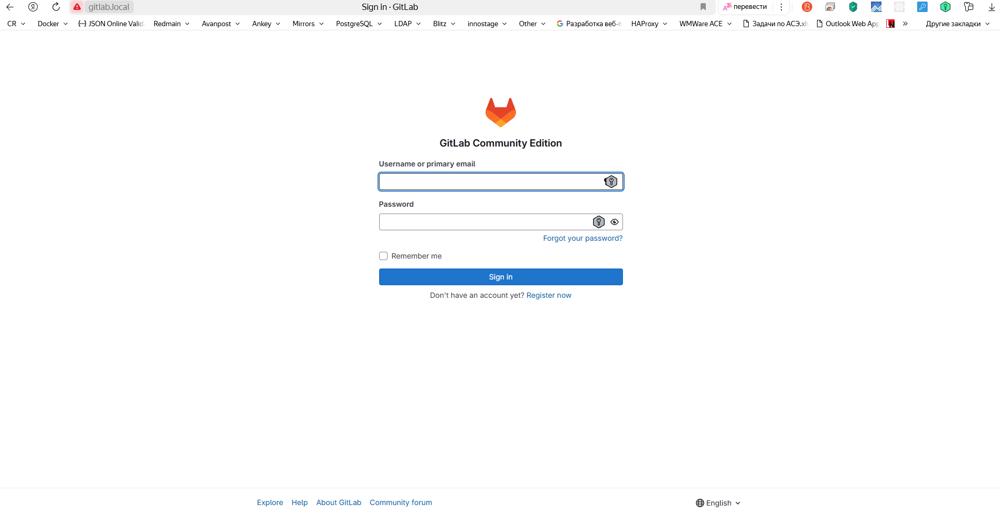
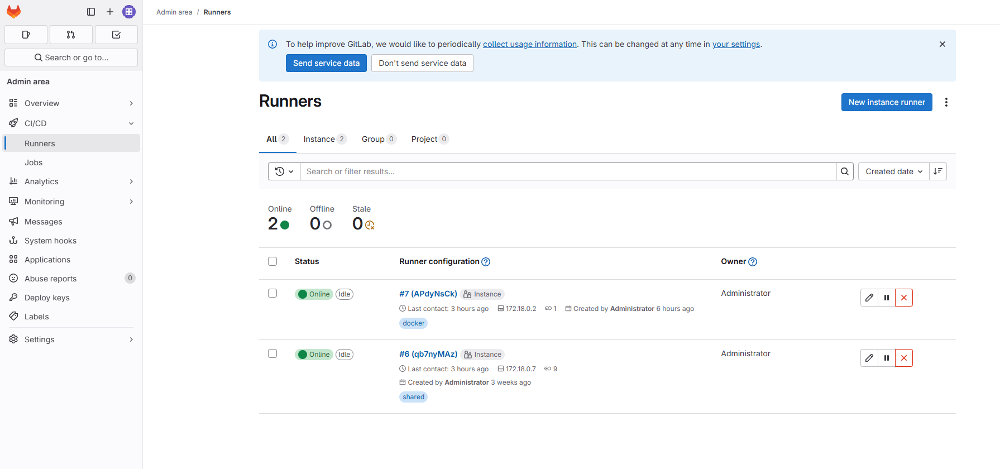

Установка GitLab + GitLab Runner в Docker compose
Создаем файл docker-compose.yml
version: "3.9"
services:
gitlab:
image: gitlab/gitlab-ce:17.8.0-ce.0
container_name: gitlab
restart: always
hostname: 'gitlab.local'
environment:
GITLAB_OMNIBUS_CONFIG: |
# Add any other gitlab.rb configuration here, each on its own line
external_url 'http://gitlab.local' # Адрес по которому будет доступен пшедфи
registry_external_url 'http://registry-gitlab.local'
registry_nginx['redirect_http_to_https'] = true
registry_nginx['listen_port'] = 5050
gitlab_rails['gitlab_shell_ssh_port'] = 2424
gitlab_rails['initial_root_password'] = 'P@ssw0rd' # Первоначальный пароль пользователя root
gitlab_rails['monitoring_whitelist'] = ['127.0.0.0/0', '0.0.0.0\0']
node_exporter['listen_address'] = '0.0.0.0:9100'
gitlab_workhorse['prometheus_listen_addr'] = "0.0.0.0:9229"
# Rails nodes
gitlab_exporter['listen_address'] = '0.0.0.0'
gitlab_exporter['listen_port'] = '9168'
registry['debug_addr'] = '0.0.0.0:5001'
# Sidekiq nodes
sidekiq['listen_address'] = '0.0.0.0'
# Redis nodes
redis_exporter['listen_address'] = '0.0.0.0:9121'
# PostgreSQL nodes
postgres_exporter['listen_address'] = '0.0.0.0:9187'
# Pgbouncer nodes
pgbouncer_exporter['listen_address'] = '0.0.0.0:9188'
gitlab_rails['prometheus_address'] = 'prometheus:9090'
nginx['listen_port'] = 80
nginx['listen_https'] = false
ports:
- '8080:80'
- '8443:443'
- '2424:22'
volumes:
- './data/docker/gitlab/etc/gitlab:/etc/gitlab'
- './data/docker/gitlab/var/opt/gitlab:/var/log/gitlab'
- './data/docker/gitlab/var/log/gitlab:/var/opt/gitlab'
shm_size: '256m'
gitlab-runner:
image: gitlab/gitlab-runner:alpine
container_name: gitlab_runner
restart: always
volumes:
- ./config/:/etc/gitlab-runner/
- /var/run/docker.sock:/var/run/docker.sock
nginx:
image: nginx
container_name: nginx
restart: unless-stopped
ports:
- 80:80
- 443:443
volumes:
- ./data/docker/nginx/conf.d:/etc/nginx/conf.d
- ./data/docker/nginx/var/log/nginx/:/var/log/nginx/
Создаем ./data/docker/nginx/conf.d/gitlab.conf для GitLab
server {
listen 80;
server_name gitlab.local;
location / {
proxy_set_header Host $host;
proxy_set_header X-Real-IP $remote_addr;
proxy_set_header X-Forwarded-For $proxy_add_x_forwarded_for;
proxy_set_header X-Forwarded-Proto $scheme;
proxy_pass http://gitlab:80;
proxy_read_timeout 90;
}
error_log /var/log/nginx/gitlab_local.log error;
access_log /var/log/nginx/gitlab_local_access.log;
Редактируем файл конфигурации ./config/config.toml gitlab runner
concurrent = 1
check_interval = 0
[session_server]
session_timeout = 1800
[[runners]]
name = "name of your runner"
url = "http://gitlab:80/" #`gitlab` - имя контейнера gitlab
token = "glrt-t1_APdyNsCknty2zuHGB62w" # Токен из gitlab
executor = "docker"
[runners.custom_build_dir]
[runners.docker]
tls_verify = false
image = "kmbn/docker-compose"
privileged = false
disable_entrypoint_overwrite = false
oom_kill_disable = false
disable_cache = false
volumes = ["/var/run/docker.sock:/var/run/docker.sock", "/cache"]
shm_size = 0
[runners.cache]
[runners.cache.s3]
[runners.cache.gcs]
Важные части: executor = "docker", image = "kmbn/docker-compose(образ, включающий Docker и docker-compose только для использования в конвейерах GitLab CI/CD), и volumes = ["/var/run/docker.sock:/var/run/docker.sock", "/cache"](для совместного использования сокета Docker)
Получение токена из Gitlab
- Переходим в
CI/CD/Runners - Создаем новый runner
New instance runner - Скопировать токен

Запуск контейнеров
docker compose up -d
Проверка доступности
- Gitlab будет доступен по адресу
http://gitlab.local

- В списке раннеров будет 1 runner в статусе
Online
